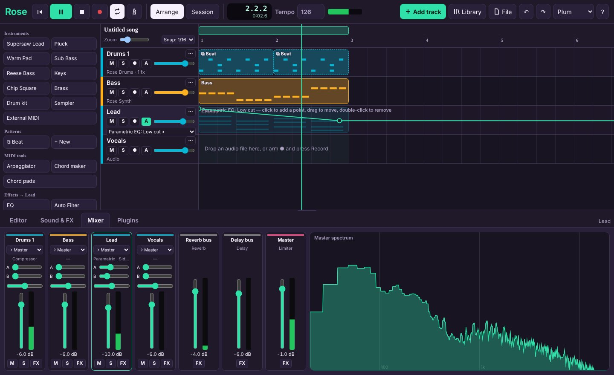
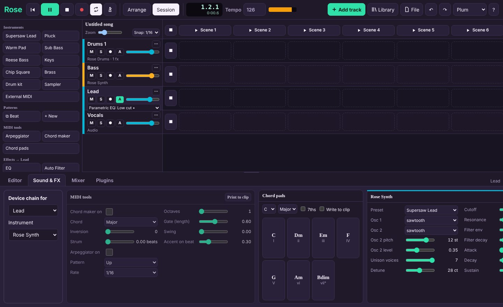

Make beats, record vocals, launch clips live, mix with real sidechain and automation, and master — on Mac, Windows, or right in your browser.

The tools producers reach for in Logic, Ableton, FL Studio, Pro Tools and Cubase — in one clean app that stays out of your way.
Audio and instrument tracks, takes from your mic or interface, MIDI from any keyboard, piano roll and a 16-step drum sequencer.
Ableton-style session view: trigger loops and whole scenes in time, then send them to the arrangement.
Draw volume, pan, sends and any effect knob over time. Exported exactly as you hear it.
FL-style linked patterns, an arpeggiator with 7 modes, a chord maker, chord pads in any key, and print-to-notes.
Real sidechain compression from your kick, group buses, reverb and delay returns, bounce-in-place and a live spectrum.
Clip fades, Strip Silence, normalize, reverse, speed and pitch, and arrow-key nudge, like Pro Tools.
EQ, compressors, limiter, reverb, delay, chorus, phaser, filters, distortion and more, plus Rose Synth with 8 presets.
The desktop app loads VST3 and Audio Unit instruments and effects, and saves their settings with your song.
Flip to Session, drop ideas into slots and launch them on the next bar. Hold a chord and let the arpeggiator run, or tap chord pads to sketch a progression straight into a clip.

Same studio, same projects. Pick the desktop app when you want your own plugins.
| Browser | Desktop | |
|---|---|---|
| VST3 / Audio Unit plugins | — | Yes |
| Built-in synth, drums and effects | Yes | Yes |
| Recording audio and MIDI | Yes | Yes |
| Clip launcher, patterns, arpeggiator, chord pads | Yes | Coming |
| Automation lanes, sidechain, group buses | Yes | Coming |
| Works offline | Once installed | Yes |
| Export WAV | Yes | Yes |
Rose Studio isn’t signed with a paid Apple developer certificate yet. Right-click the app → Open → Open once; after that it opens normally. If macOS still blocks it: System Settings → Privacy & Security → Open Anyway.
Plugins built into another DAW only run inside that DAW. Any plugin you own as VST3 or Audio Unit works in Rose Studio desktop — including SHRUB, Serum and FL plugins sold as VST.
In the browser app your song saves automatically on that computer; use File → Save project for a .rose file you can back up or move. The desktop app saves .rose sessions wherever you choose and recordings in Music → Rose → Recordings.
A new version is being built — it takes about 15 minutes after an update. Try again shortly or open all versions.